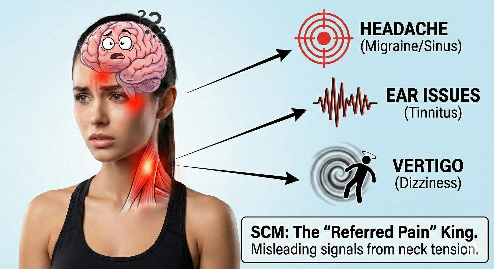

檢查都沒問題，為什麼還是頭痛暈眩？揭開藏在脖子前側的「偽裝大師」
【 檢查都沒問題，為什麼還是頭痛暈眩？揭開藏在脖子前側的「偽裝大師」 】
「眼眶深處莫名脹痛、偶爾耳鳴，走路還覺得浮浮的像暈船...」
為了這些毛病，跑遍了耳鼻喉科、神經內科，連腦部 MRI 都照了，得到的答案卻是：「報告一切正常，腦部沒長東西，應該是壓力太大了。」
報告是正常的，但痛苦是真實的。這到底是怎麼了？
如果您也有這種「找不到原因、卻真實存在的怪病」，請現在就摸摸您脖子的前側。
問題很可能根本不在大腦，而是那一對負責支撐頭顱的 「V 型鋼索」 —— #胸鎖乳突肌 (Sternocleidomastoid, #SCM )在作怪。
-
💡 它是脖子的「導航舵」，也是身體的「備用呼吸機」
#胸鎖乳突肌 是頸部最明顯的兩條淺層肌肉，從耳朵後方的乳突一路連接到鎖骨與胸骨。在解剖學與生物力學上，它扮演著兩個至關重要的角色：
1. 頭部的導航系統： 它負責頭部的轉動、點頭與維持水平。大腦透過它回傳的訊號，來判斷「頭現在在哪裡」。
2. 備用呼吸肌：這點常被忽略。當我們劇烈運動或處於高壓狀態時，身體會啟動「戰逃反應」，這時 SCM 會用力收縮拉提鎖骨，幫助胸腔擴張以吸入更多空氣。
-
⚠️ 為什麼它被稱為「偉大的偽裝者」？
這條肌肉最狡猾的地方在於：它生病的時候，痛的往往不是脖子。
根據疼痛權威 Travell & Simons 的肌筋膜研究，SCM 是人體的 「 #轉移痛 (Referred Pain)」之王。這就像是一通「惡作劇電話」——發話端明明在脖子，但接聽端卻在頭部與五官。
當因為長期『 #低頭滑手機 』 或 『壓力性 #聳肩呼吸 』 導致 SCM 過勞緊繃時，它會把錯誤訊號「射擊」到遠端，讓你誤判病情：
- 偽裝成 #頭痛 ： 痛點轉移到眼眶深處、額頭或頭頂。這種痛常被誤認為是青光眼、鼻竇炎或是叢集性頭痛。
- 偽裝成耳疾：引發 #耳鳴 、 #耳朵悶塞 感，甚至聽力暫時模糊。
- 偽裝成 #暈眩 (Vertigo)： 這是最可怕的症狀。因為 SCM 負責提供頭部的「本體感覺」，一旦它痙攣鎖死，就像導航儀故障一樣，會傳遞混亂的訊號給大腦。大腦以為你在晃動，但眼睛看出去卻是靜止的，這種訊號衝突就產生了突發性的暈眩。
-
🔄 真實故事：壯漢教練瞬間「被擊倒」
別以為只有久坐辦公室的人會有這個問題，身體強壯的人照樣會中招。
前陣子，一位資深的體能訓練師（健身教練）在家人焦慮的攙扶下來到診間。他在上課示範一個瞬間爆發力的動作後，突然感到「天旋地轉」，暈到想吐，後腦勺更是緊繃脹痛。
由於症狀來得太急太猛，家人一度擔心是腦中風。但在影像檢查排除腦神經問題後，透過中醫脈診與徒手觸診發現：右側頸部側面的SCM，腫得像一條硬邦邦的繩索。
原來，在瞬間發力時，SCM 為了維持頸部穩定並輔助用力吸氣，承受不住巨大的張力，瞬間「痙攣鎖死」。
當我用手指輕輕鉗捏他的 SCM 激痛點時，他眉頭一皺下意識閃躲，驚呼：「對！就是這個暈感！一按那個暈眩感就衝上來了！」
賓果。兇手抓到了，不是腦中風，是肌筋膜失能、鎖死而造成的平衡失調。
-
🛠 治療關鍵：決勝負的「鉗捏技術」
面對這種已經「鎖死」的深層肌肉，光靠表層按摩是無效的，甚至可能因為刺激發炎而更痛。我們需要的是精準的「 #乾針治療 (Dry Needling)」。
但是，要在脖子前側扎針？這裡下面可是頸動脈與頸靜脈啊！
這就是考驗醫師技術功力的時刻。乾針 SCM 的成敗與安全，完全取決於是否具備到位的「 #鉗捏技術 (Pincer Palpation)」。
這不只是捏起來而已，醫師必須有極佳的手感層次：
1. 分離 (Isolation)：像是在夾娃娃機的夾爪一樣，精準地將胸鎖乳突肌從下方的血管神經束上「提」起來，創造出一個安全的間隙。
2. 鎖定 (Locking)：手指必須穩穩固定住肌肉的激痛點，確保肌肉不會滑動，讓針尖只停留在肌肉層，絕對不觸碰血管。
在那位教練身上，當我透過精確的鉗捏固定，將針尖送入激痛點，引發了肌肉的 局部抽搐反應 (Local Twitch Response) 時，那是一種深層的釋放感。
他當下的反應不是喊痛，而是鬆了一口氣說：
「誒?!不會痛欸，反而覺得......很舒服，那種緊箍咒被拿掉的感覺。」
收到這個回應我就放心了，表示所想與所做完全契合。當操作者能用鉗捏創造出絕對的安全感，身體感受到的就是純粹的解脫。
-
👨⚕️ 醫師給你的建議
現代人的生活型態，正在無形中虐待這兩條「V 型鋼索」。不想被怪病纏身，請從改變習慣開始：
1. 把手機舉高（Life Hack）：或者乾脆就別滑了！
別再低頭把手機放在肚子看了！低頭角度每增加 15 度，脖子的負重就增加一倍。請把手機舉到視線平視的高度，或用個支架把手機架高，這能直接阻斷 SCM 變短變緊的源頭。
2. 別用肩膀呼吸：
觀察自己呼吸時，是不是肩膀一直聳起來？這代表你正在使用「備用呼吸機」，讓 SCM 24 小時加班。請練習腹式呼吸，把氣吸到肚子裡，放鬆鎖骨。
3. 脖子前側 #別亂按 ：
正因為這裡有大動脈，『鉗捏』是專業醫師的技術。請找具備完整訓練的醫療人員協助，千萬不要用力隨意按壓或按摩，以免出意外。
覺得頭暈眼花、偏頭痛卻找不出原因嗎？或許你的脖子前側，正緊得像兩條鋼索一樣，等著你幫它「鬆綁」。
#胸鎖乳突肌 #SCM #偏頭痛 #暈眩 #耳鳴 #莫名頭痛 #乾針 #鉗捏技術 #中醫針傷 #中醫徒手治療
太初中醫診所 東門中醫
中醫師 黃彥鈞
---
參考文獻 (References)：
1. Simons DG, Travell JG. (1999). Travell & Simons' Myofascial Pain and Dysfunction. (肌筋膜疼痛聖經，強調 SCM 治療需透過鉗捏觸診以避開頸動脈)
2. Dommerholt J, et al. (2019). Trigger Point Dry Needling: An Evidence and Clinical-Based Approach. (詳細描述 SCM 乾針操作的安全規範與鉗捏技術要點)
3. Missaghe S. (2004). Sternocleidomastoid syndrome: A case study. Journal of the Canadian Chiropractic Association.
本文內容僅供健康衛教參考，頸部前側構造複雜（含頸動脈），乾針治療屬專業醫療行為，必須由受過專業訓練的醫師操作，民眾切勿自行嘗試或隨意用力按壓。
